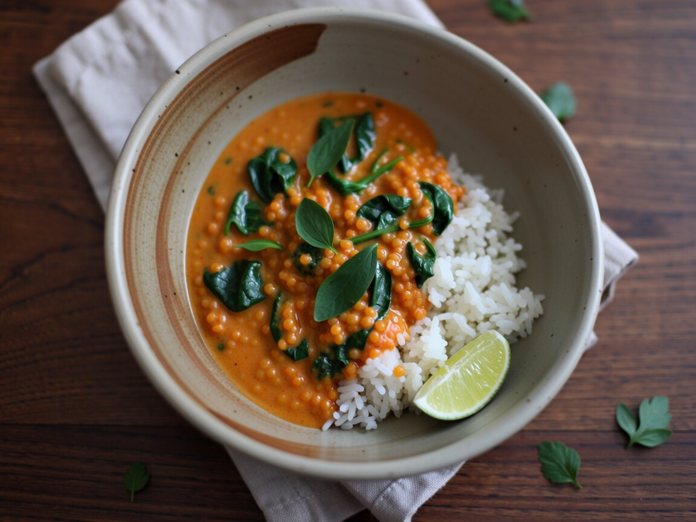

Rotes Linsen-Kokos-Curry
Eine Schüssel Wärme für lange Tage.
Zutaten
- 200 g rote Linsen
- 1 Dose Kokosmilch (400 ml)
- 1 Dose stückige Tomaten
- 1 Zwiebel
- 2 Knoblauchzehen
- 1 Stück Ingwer, daumengroß
- 1 EL Currypulver
- 1 TL Kurkuma
- 2 Handvoll Babyspinat
- 1 Limette
- 150 g Reis
- Salz, etwas Öl
So geht's
- Reis nach Packung aufsetzen.
- Zwiebel, Knoblauch und Ingwer fein hacken und in Öl 3 Minuten andünsten, Curry und Kurkuma kurz mitrösten.
- Linsen, Kokosmilch, Tomaten und 200 ml Wasser dazugeben und 12 Minuten köcheln, bis die Linsen weich sind.
- Spinat unterrühren, mit Salz und Limettensaft abschmecken.
Curry und Reis getrennt in die Box. Zwei Minuten Mikrowelle, und am nächsten Tag schmeckt es noch runder.